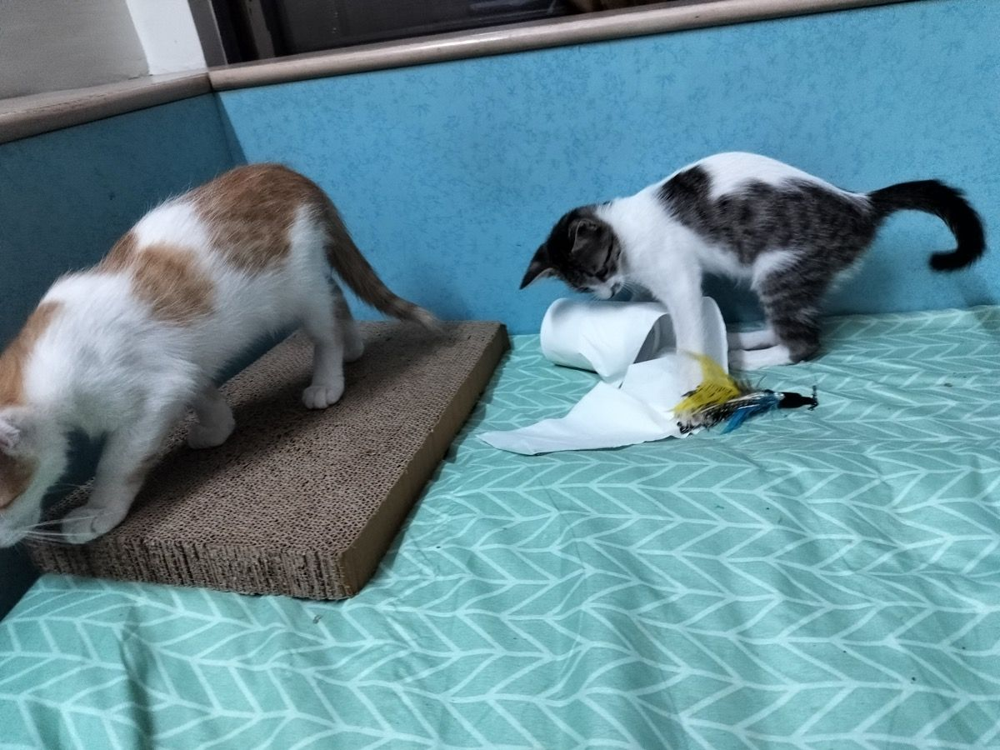
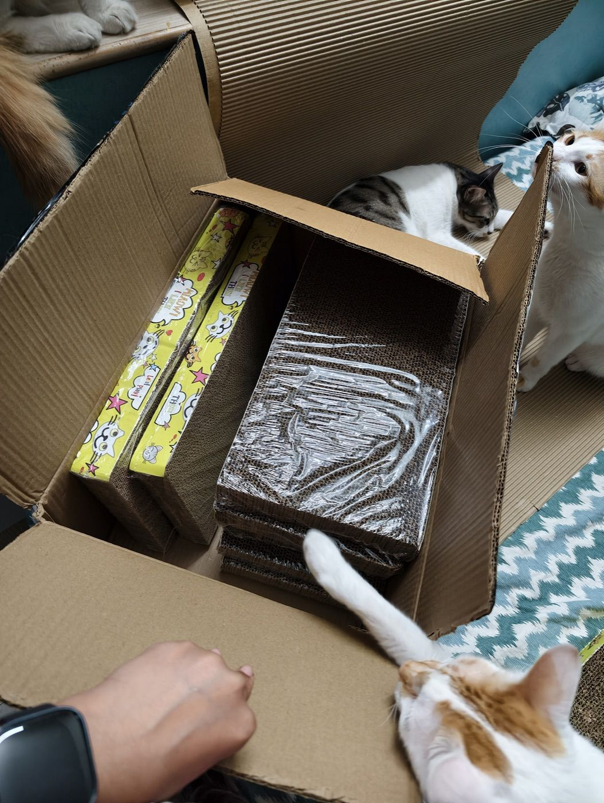
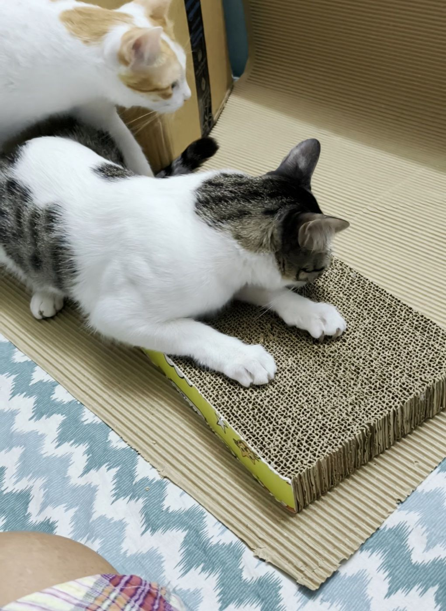
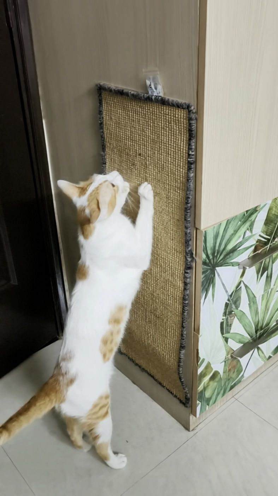

Scratching isn't a problem behaviour. It's natural, and your cat needs to do it. You can't stop it, and you shouldn't try. Give it places where it's allowed to scratch, and teach it early to keep its claws off you. A pack of 8 cardboard scratchers lasted my four cats a year.
MAKE YOURSELF AT HOME
How big are they, really?
These are real scratchers sold on Amazon, illustrated beside my cats to help you picture their size. Tap one to see its product name, dimensions and link.
Queen mattress: 152 cm wide × 198 cm long
Around our house & a little wishful thinking
10 choices · Swipe or scroll, then pick one.
An approximate illustrated size guide. Product widths and cat proportions share one scale; room artwork and cat measurements are approximate. The mattress reference is 152 × 198 cm. Wishlist items are things I’d like to try.
FROM THE DRAWING TO OUR HOME
Yes, these are the real ones.
Two of the scratchers we use, filmed at home. Tap play for a little inspection by the cats.
The new-pad inspection
The new pads are in the box. Eevee scratches the one-week-old pad while Growlithe is on the board, and the use already shows.
A proper Eevee stretch
The sisal pad on our cupboard is about two years old, restuck with my own double-sided tape. I think I’ve even washed it once. His favourite catnip bag is at the top for this shot.
made by AI, claude, chatgpt, Orpita Das. The home videos are my own.

Why cats need to scratch
Scratching looks like damage to us. For a cat, it does three jobs.
- It keeps the claws healthy. Dragging the claws down pulls off the old outer layer and leaves a sharp new one underneath. Those hollow claw pieces you sometimes find near a scratcher are the old layers.
- It's a good stretch. It works the front legs and the spine.
- It leaves a message. There are scent glands between the paw pads, so a scratch is a mark and a smell together. Even indoors, that smell may help a cat feel safe in its home.
A cat with nothing of its own to scratch will pick something. That's usually the sofa, because it's sturdy and tall and the claws get a good grip.
The scratchers that have worked for me
Most of what mine use is a pack of 8 flat cardboard scratchers. They love the box as much as the scratchers, and each scratcher comes with a small packet of catnip.
Mine are these cardboard scratchers, eight in a pack.


Cats also want to scratch standing up, at full stretch. A post should be as tall as your cat stretched up on its back legs, and heavy enough not to wobble, because cats ignore a post that moves. On our cat tree, the columns wrapped in sisal rope do this job.
If floor space is short, a scratcher fixed upright saves it. Mine is a sisal pad stuck to the side of a built-in wooden cupboard. I put it up in March 2024 and it's still going strong. I added extra double-sided tape, but it didn't need it. I have a second stick-on scratcher elsewhere in the house. Cats choose their own favourites, too. Pikachu has claimed this pad and goes to it on his own. Eevee doesn't mind it, and the other two rarely bother.

I keep one wherever my cats spend their time. Guides for homes with several cats suggest one per cat plus one extra, in different spots, much like the rule for litter boxes. Mine are brothers and share without any fuss. Flat cardboard and sisal are both good bets. In a survey of 2,465 cat owners in the US and Canada, homes with sisal rope, flat scratchers and extra scratchers reported less scratching on their furniture.
A scratcher has a long life. A shredded one looks a mess to us, but cats often prefer it, and a used one smells familiar. Mine seem to love the hollow they've dug into it, with their own fur and smell in it. What's ugly to us can be a cat's comfort. Things get damp, dusty and dirty fast in our climate, though, so for hygiene I throw mine out after five or six months. Before that, the old ones go to the catio (my balcony, closed in with windows and mosquito screens), where they're the base of the wall perches. There they give paws a better grip than bare wood or metal when the cats jump from perch to perch. One that smells, has got damp or has food, a hairball or sick on it goes sooner.
Where to put them
- Near where your cat sleeps, because cats often scratch right after they wake up.
- Right next to the spot it already scratches. Sofa corner? The scratcher goes at that corner.
If your cat has already picked the sofa
- Put a scratcher right beside the spot. Match what it likes: a cat that claws upward needs something tall, and a cat that claws the mat needs something flat.
- Cover the spot for now with a thick, heavy blanket.
- Make the scratcher interesting. Play with a wand toy around its base. Once the claws touch it, that's often enough. A treat or a gentle "good" helps too. So does a pinch of catnip rubbed into it, though about 1 in 3 cats ignore catnip, and kittens under three months don't respond to it.
- Once it's using the scratcher, move it slowly to where you'd like it, and take the blanket off.
Don't shout or punish, and don't hold its paws on the scratcher. That frightens a cat and won't teach it what you hoped. In that same survey, homes that told their cats off reported more scratching on the furniture, and homes that rewarded the right scratcher reported less. A survey can't prove why, but it's a good reason to skip the scolding.
Some cats scratch for the attention, so ignore the sofa and make a fuss of them at the scratcher. My own sofas are under temporary sheets because of cat hair, and a covered sofa is one of the things that helps.
In my room they do scratch the edge of my 8-inch mattress, and I just let them. (Sheepish.) For me the house is the cats' house, and I don't expect anyone else to feel the same. Just check that nothing is coming out of whatever they scratch. I don't want bits of synthetic foam in the air, for them or for us.
If you want to make your own scratcher
DIYs can work. Here are my mistakes, so you can skip them.
I've cut up cardboard. Stiff cardboard dulled my cutter, and the result still wasn't stiff enough for an energetic young cat, so I accepted the cost of buying scratchers. A flattened box or tightly bound strips are fine to try, though I don't think they're enough for an active cat. You can find cardboard cutters online made just for this. I've never tried one, because the pack of 8 is economical enough for me.
I've also bought sisal rope and wrapped it around columns of various sorts. The Fevicol smell was unpleasant to the cats and they wouldn't come near it. If you try this, use glue only where you must, and let it air out before the cats get it.
A bori (a jute sack) isn't really a scratcher. I haven't used one recently. When I was younger, stray kittens loved climbing all over the bori dumped on my balcony. They dug their nails in and played with it like a soft toy. So it's more of a toy that lets them use their claws. If you try one, make sure it's clean and has never held chemicals, and take it away once it frays, because loose threads aren't safe to swallow.
I also have some jute rugs, not sold for cats at all, that my cats took as their own. They sleep on those and don't scratch them.
Teach a kitten to keep its claws off you
When people message me about scratching, it's usually about their hands and arms. Cats aren't dogs. They scratch, by mistake too. But you can teach a cat not to scratch you.
Kittens learn social skills by playing with their brothers and sisters. With us they need the same lesson. Those teeny nails and milk teeth barely feel like anything now, but they will hurt a lot in future. A kitten taught to play with hands can grow into an adult that scratches and bites hard, without meaning any harm.
So we make a habit of avoiding playing with fingers right from when they are kittens. Play with a wand toy instead. The distance keeps your hands safe, and the kitten can fully enjoy its natural instinct to claw and bite, on safe surfaces. If claws land on you, stay calm and stop the game, because a yelp or a jerk of your hand can make it more exciting. Then bring out the toy or a scratcher.
One of mine scratched me the most. I'd be sitting on my bed and he'd come like a rocket, chasing another cat. By eight months he had learnt. Some cats listen and learn better than others, and that's just personality. Our indies are smart and very friendly, and they can most definitely be taught.
You might also consider two kittens instead of one, so that they play rough with each other instead of with you. (Cheeky, I know.) Rescuers say this a lot, and in my experience kittens growing up alone scratch a lot, but I haven't found good research behind it.
Feral cats are different
A few street cats in India are truly feral. They'll eat from my plate while I stand far away, but they won't let me touch them. When I've tried moving closer, slowly, over months, they've scratched my face.
A feral cat is usually born outside and never learnt that people are safe. Kittens learn that in their first weeks: between 2 and 7 weeks of age by one count, and up to about 9 by another. A cat that misses out can stay afraid of people for life. So its scratch comes from fear, which is a different thing from a kitten playing rough.
Cat vets generally advise against trying to tame a feral kitten over 4 months old, because it can harm the kitten's emotional health. It would likely be distressed living indoors with people. It's better to have it neutered and returned to its own place. A younger kitten may still learn, so ask a rescuer you trust.
Nail cutting helps, but it isn't the fix
Short nails really help your skin, and my nail-cut video shows how I do mine. They won't save the sofa, though. In the survey, nail trims made no difference either way, and your cat still needs to scratch. A scratcher is the real answer.
When to ask a vet
- Your cat is scratching all over the house, especially around doors and windows. It may be unsettled, and a vet can help you work out why.
- An older cat has stopped scratching and its nails are growing long or thick. Overgrown nails can grow into the pads, and thick nails can be a sign of illness.
A happy cat is one who has a clean litter box and places to scratch and stretch, with full happy permission from their human parents.
Picturing one in your home?
The cats on our board are indies living with the people who rescued them, across Pune and PCMC. Adoption is free.
Questions? DM us.
We're @catadoption_pune on Instagram — DMs are how everything here works.